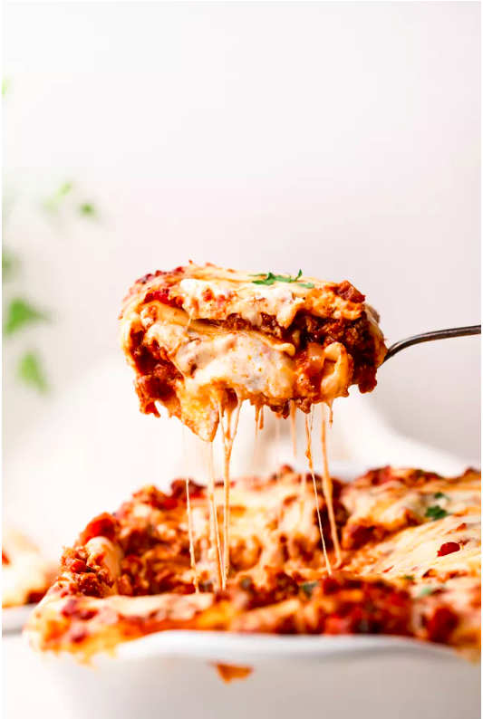

Lasagna

Description
This recipe is amazing. Who doesn't like amazing lasagna?
We're here to eat!
Ready to rumble?
Ingredients
For the Meat Sauce:
- 2 teaspoons extra virgin olive oil
- 1 pound ground beef chuck
- 1/2 medium onion, diced (about 3/4 cup)
- 1/2 large bell pepper, diced (about 3/4 cup)
- 2 cloves garlic, minced
- 1 (28oz) can good-quality tomato sauce
- 3oz tomato paste
- 1 14oz can crushed tomatoes
- 2 tbsp chopped fresh oragano
- 1/4 cup chopped fresh parsley
- 1 tbsp Italian seasoning
- 1 pinch garlic powder
- 1 tbsp red or white wine vinegar
- 1 tbsp to 1/4 cup sugar (to taste, optional)
- Salt
To assemble the lasagna
- 1/2 pound dry lasagna noodles (minimum 9 unbroken)
- 15oz ricotta cheese
- 1 1/2 pounds mozzarella cheese, grated or sliced
- 1/4 pound freshly grated Parmesan cheese
Steps
- Boil water
- Brown the ground beef
- Cook te bell pepper, onions, garlic, add back the beef
- Transfer to medium sized pot, add tomatoes and remaining sauce ingredients to build sauce
- Boil and drain the lasagna noodles
- Heat the oven to 375
- Assemble the lasagna
- Bake
- Cool and serve